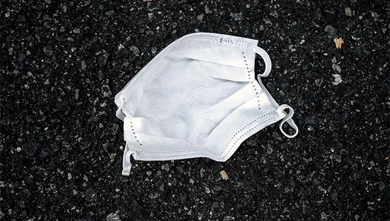

香港疫情“倒灌”：输入个案再创记录，社区传播风险增大
原文链接 备份链接 对比其他地方的疫情，中国香港特区此前并未进入持续本地暴发状态。“从疫症开始以来，当下的香港才处于疫情传播最高风险的时候。” 在过去一周当中，香港特区累计确诊119例新冠肺炎病例，与此次疫情爆发后前50天的确诊总人数大致 …

图片来源：视觉中国
“
梁卓伟表示，数据显示，香港自1月下旬以来，病毒的即时有效繁殖率一直在1以下，但过去一周已经超过1，即每一个患者，可以将病毒传染给至少1个人。
”
2020年3月20日，香港大学医学院院长梁卓伟警示，香港正面临新冠肺炎疫情出现以来最高风险，或将迎本地疫情大暴发。
据官方数据，香港特区20日新增48例新冠肺炎确诊病例，再创单日新高，患者年龄介于4至69岁。
海外网援引香港媒体报道称，香港特区卫生防护中心传染病处主任张竹君表示，香港累计确诊病例至今增至256例。48例新确诊个案中，有36例个案有外游史，大部分为欧洲，也有新加坡、瑞士、英国、土耳其、加拿大、奥地利、泰国、迪拜等。
3月20日，香港大学李嘉诚医学院世卫传染病流行病学及控制合作中心在香港举行记者会，发表新型冠状病毒即时有效繁殖率实况报告。梁卓伟指出，目前香港已出现大量的外国输入个案，且数量已超过疫情早期的内地输入个案。
中新社报道称，梁卓伟表示，数据显示，香港自1月下旬以来，病毒的即时有效繁殖率一直在1以下，但过去一周已经超过1，即每一个患者，可以将病毒传染给至少1个人。
梁卓伟强调，目前疫情依旧严峻，但调查发现，港人的防护意识最近有所下降，人群聚集、聚餐的现象增加。他呼吁市民保持社交距离，商铺应注意营业时间、人流控制，继续采取防疫措施，老人院舍的防护工作更应做到滴水不漏。

原文链接 备份链接 对比其他地方的疫情，中国香港特区此前并未进入持续本地暴发状态。“从疫症开始以来，当下的香港才处于疫情传播最高风险的时候。” 在过去一周当中，香港特区累计确诊119例新冠肺炎病例，与此次疫情爆发后前50天的确诊总人数大致 …
原文链接 备份链接 【财新网】（驻香港记者 王端 文思敏）见到袁国勇是在他位于香港玛丽医院的办公室，玛丽医院是香港最大的公立医院，也是香港大学的教学医院。63岁的袁国勇在新冠疫情期间，需要往返香港和内地多个城市调研和协助政府防控抗疫，他笑 …
原文链接 备份链接 在疫情爆发前，澳大利亚人宁愿用贵一点的本国厕纸，也不会考虑中国品牌的。 文 | 张惠南 我是上海人，在澳大利亚墨尔本定居已经一年了，经营着当地一家有着二十年历史的社区便利店。每天都和客人聊聊天，喝喝茶，看看报纸，下午 …
原文链接 备份链接 国内继续保持本地新增确诊、新增疑似病例均为零。多省领导已在公开场合摘口罩。美国新增逾5000，累计确诊近2万，美加、美墨边境即将关闭。德国病死率仅0.3%，重症比例不到10% 3月17日，在土耳其伊斯坦布尔，工作人员为 …
原文链接 备份链接 导言 岁末年初以来，新冠肺炎疫情蔓延全国。医护人员冲锋在前，病人的生死、同胞的安危，无不牵动着我们的心。近期，我们将陆续推出一系列文章、笔谈，围绕和此次疫情以及历史上类似公共危机相关的政治、经济、法律、文化的复杂成因及 …